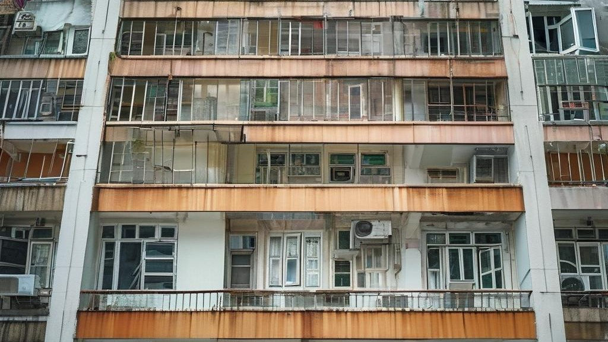
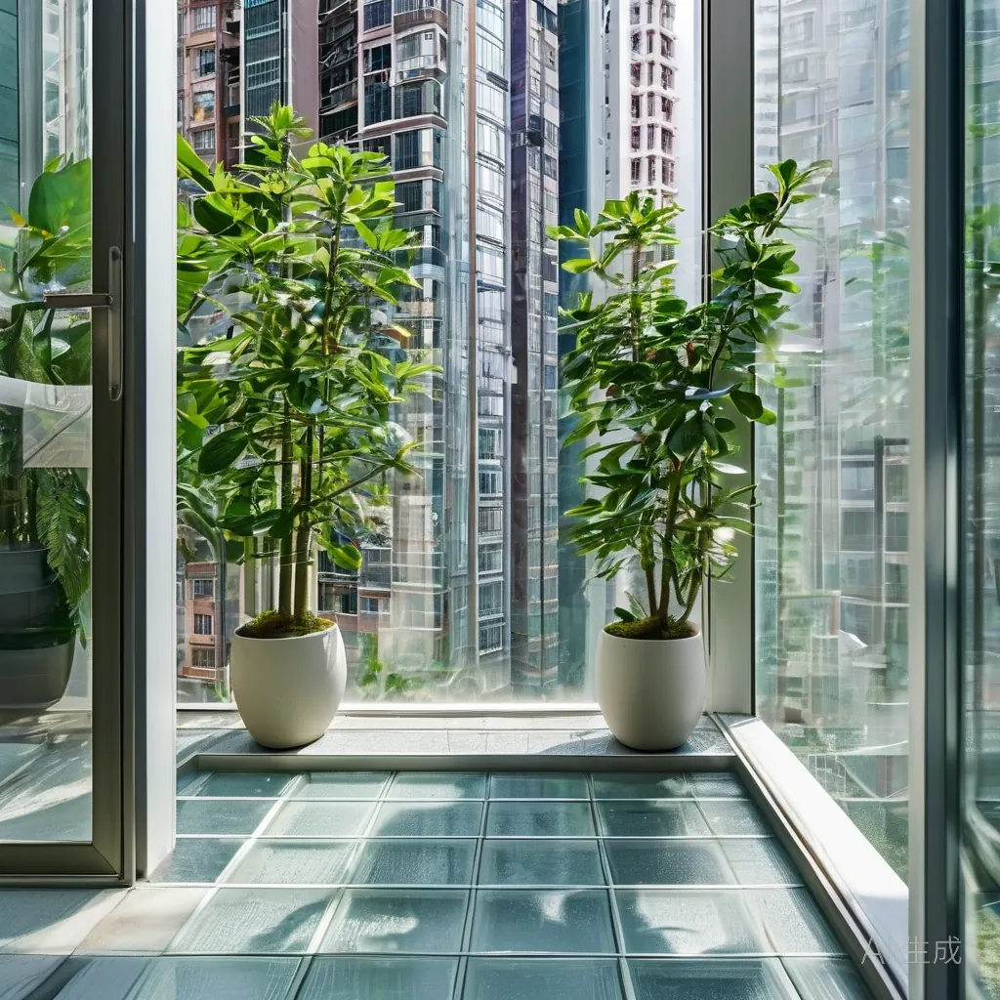
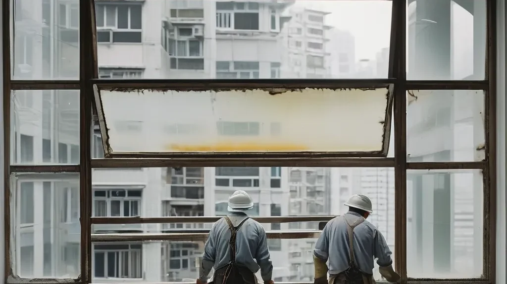
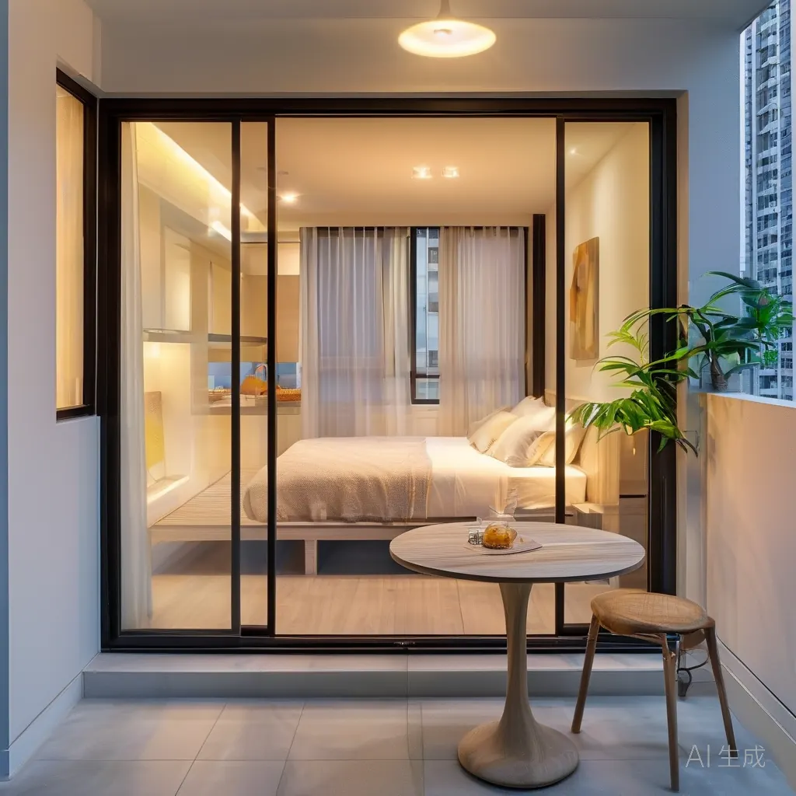

大埔420呎平台圍封玻璃：雄哥拆解清拆令點樣逐日罰錢

📍 場景：大埔一幢商住大廈低層連平台單位 420 呎｜主訪：雄哥（行內人叫雄哥，做開現場）｜記錄：雲蕾｜日期：2026年11月25日 20:12:15｜WhatsApp 報價：852 5190 2328
序幕：一條唔夠四百字嘅法庭消息，三個數字
11 月 25 日中午 11 時 25 分，香港商報網出一段法庭消息，標題好平實：「大埔太和路一大廈平台涉嫌僭建 2業主被判罰款近6萬元」。無大圖、無煽情，但我睇完即刻想起呢一年接過嘅幾單平台個案。
件事係咁：大埔一幢商住大廈有兩個平台搭建物，冇事先獲得屋宇署批准及同意，署方按《建築物條例》第 24（1）條向兩名共同業主發清拆令。兩人冇履行，曾被檢控、定罪、罰款；罰完仍冇清拆，屋宇署提出第二次檢控。7 月 28 日在粉嶺裁判法院定罪，11 月 24 日判罰款合共 59,700 元。
呢個數字要拆開睇：59,700 元裡面，有 49,700 元係「就罪行持續的日數」判嘅罰款。即係話，唔係罰你「做錯一件事」，係罰你「錯完之後每一日都唔改」。
屋宇署 11 月 25 日再講一次：僭建物可導致嚴重後果，業主必須盡快遵從清拆令；無合理辯解而唔遵從，一經定罪最高可罰 20 萬元及監禁一年，並可就持續的每一天另罰最高 2 萬元。
雲蕾寫落筆記三個數字：59,700、49,700、第二次檢控。比任何一句「唔好僭建」都有用。
第一幕：雄哥第一反應——「平台加個玻璃」從來唔係裝修
我做現場咁多年，最常聽到嘅一句話係：「我只係裝修自己間屋，又冇拆人哋嘅嘢。」
問題係，「自己間屋」同「大廈外殼」係兩件事。平台、露台、天面、外牆唔係「你間屋嘅內部裝修」，佢們屬建築物一部分：要計荷載、計防火分隔、計走火通道、計排水。你喺平台加玻璃圍封、加頂、加矮牆，結構上就多咗重量，防火上亦可能擋住原本嘅分隔同逃生路線。
「但係業主唔係個個識睇圖則，佢買返嚟嘅時候，上手已經圍封好，佢以為間屋本來就係咁。」
對，呢個係最無辜、最常見嘅情況。我見過唔止一次：單位二手買入，上手十幾年前已經將平台圍成一間房，睇落整整齊齊。新業主收樓只係想換櫃、換地板、換燈，覺得「我冇改結構」。但文件上，嗰個圍封由第一日就係未經批准嘅構築物；清拆令跟住構築物走，唔係跟住人走。
「你冇起佢，但你接手咗佢。清拆令唔會問你幾時買樓，只會問你幾時拆。」
最痛嘅一點唔係 59,700 元，係「第二次檢控」四個字：業主仍然唔拆，屋宇署再告一次，今次按日計。意思好清楚——清拆令係一張會計時嘅單，你唔開信封，佢照樣跳錶。
第二幕：拆程序——邊啲「平台工程」最容易中，點樣查、點樣做返正
我唔係律師，亦唔會教你點樣避法例；我只講現場見到嘅實況，同我一貫要求師傅點做。
第一類，平台玻璃圍封。最多人中，亦最易被鄰居投訴。由外面望，個平台由「有欄杆嘅露天位」變成「一間有窗嘅房」，體積、外觀、防火性能全部變咗。
第二類，平台加頂、加鐵皮。業主心態係「遮雨啫」，但加咗頂就等於多一個有蓋構築物，仲會影響樓上單位嘅排水同外牆維修通道。
第三類，平台改成廚房或者洗手間。呢個最危險：多咗明火、多咗來去水、多咗地台開孔，防水同結構荷載一齊出事，樓下第一個中招。
第四類，露台加窗變房間。舊樓好常見，但露台本來設計係半室外，加窗之後嘅荷載、消防同外牆維修，全部要重新計。

咁點查？我教客人三個動作，唔需要專業資格都做得到：
一，去屋宇署網站睇自己單位嘅批准圖則（或請認可人士代查），睇平台、露台本來係咩樣；二，問上手業主拿裝修紀錄同相片，睇圍封係邊年做；三，簽臨約前若見平台有明顯加建，要求賣方書面交代，唔好靠口頭。
至於做返正，程序係固定嘅：搵認可人士（建築師／測量師／工程師）睇現場同圖則，判斷屬小型工程呈報定要正式入則。平台圍封、加頂、改用途，絕大多數都要入則，唔係「師傅話冇事」就可以開工。呢一步嘅費用，同清拆令嘅代價完全唔同量級。
「業主最擔心嘅係：我已經簽咗師傅，佢話唔使入則，點算？」
「叫佢白紙黑字寫低『唔需要入則』四個字，睇下佢敢唔敢簽。唔敢簽嘅，就係答案。」
第三幕：對業主同師傅，各自意味咩——五條可執行嘅規矩
呢單案兩個業主最大嘅損失唔止罰款，而係時間同精神，同一個「唔知幾時再告第三次」嘅陰影。
對業主，五條：
一，買樓前查圖則，特別係連平台、天台、露台嘅單位；二，涉及平台、露台、外牆、天面嘅改動，開工前要有書面判斷（要唔要入則），唔好靠「人人都咁做」；三，合約寫清楚入則同呈報嘅費用責任；四，施工全過程拍照留底，包括拆之前嘅原狀；五，收到清拆令唔好拖——睇清命令日期同申訴期限，搵認可人士評估，因為每拖一日都可能係錢。
對師傅同裝修公司，三條：
一，唔好為咗接單講「呢啲唔使入則」，尤其平台同露台；二，報價單要分項列明邊項涉及外殼改動，並寫明「如需入則及小型工程呈報，另行報價」；三，遇到上手留低嘅僭建物，先講清風險再決定做唔做——你可以美化一個僭建物，但冇能力令佢合法。
順帶講價錢。我做過一個 420 呎同類個案：清拆平台玻璃圍封及薄頂、修補外牆同地台防水、重鋪平台磚、室內局部翻新。以下係故事報價，只作參考：
清拆及廢料清運 $6,800｜外牆及地台防水修補 $8,500｜平台地台磚連鋪工 $5,200｜客廳到頂櫃（E0 多層實木夾板）$11,000｜房門兩套連安裝 $4,200｜全屋油漆 $3,800｜雜項及保護 $1,500。加起來約 $41,000；但如果只做「拆返正」嘅部分，規模細好多，一般套餐落在 $35,000–$38,000 區間（故事報價，實際以度尺為準）。
我想講嘅重點唔係價錢，係次序：合法化嘅錢，一定要放喺裝修之前，唔可以放喺清拆令之後。前者係成本，後者係罰款加成本。

尾聲：清拆令唔會因為你唔開信封而停手
祥叔以前喺觀塘木行做咗三十幾年，佢同我講過一句我好記得：「八十、九十年代，平台唔圍封就好像蝕底，個個都用 2×4 杉木加玻璃封起佢，當時冇人覺得有問題。今日一封投訴信，就要你逐塊拆返落嚟。」
時代變，規矩變，但有一樣冇變：圖則上冇嘅嘢，遲早要還。你可以喺裝修預算還，也可以喺裁判法院還——前者有價單，後者按日計。
今晚呢單案，兩個業主罰咗 59,700 元，其中 49,700 元係「拖」出嚟嘅。我唔知佢哋當初圍封個平台用咗幾錢，但我肯定，一定平過今日張單。

記住我一句：平台唔係唔可以用，係要用得合法。你唔需要一個玻璃箱，你需要一個唔會半夜跳錶嘅家。
❓ 平台僭建與清拆令三問
Q1：平台圍封玻璃，係唔係一定要入則？
大多數情況係。平台屬建築物外殼一部分，圍封涉及外牆改動、額外荷載、防火分隔同逃生路線，通常唔屬可以「師傅口頭判斷」嘅級別。最終要由認可人士（建築師／測量師／工程師）按圖則同現場判斷屬小型工程呈報定正式入則。未經批准就圍封，法律上就係僭建物，屋宇署可按《建築物條例》第 24（1）條發清拆令。
Q2：收到清拆令，可唔可以唔理？
唔可以，而且代價係按日累積。無合理辯解而唔遵從清拆令，一經定罪最高可罰款 20 萬元及監禁一年，並可就罪行持續的每一天另處罰款最高 2 萬元。2026 年 11 月 24 日大埔呢單案就係例子：兩名業主已經被檢控過一次，仍然唔拆，屋宇署提出第二次檢控，最後罰款 59,700 元，其中 49,700 元係按罪行持續日數計。正確做法係先睇命令日期同申訴期限，再搵認可人士評估，盡快安排清拆或申請。
Q3：公屋單位嘅平台／露台，可以點做？
公屋一律以「可移動設計、免鑽牆」為原則：用免鑽孔層架、活動櫃、趟門式收納，唔改結構、唔鑽外牆、唔改公用設施、唔圍封露台。任何涉及結構或外殼嘅改動，都要先向房屋署查詢同申請，唔好聽師傅講「人人都咁做」。租約條款寫得好清楚，改動一經發現，還原責任同費用都喺租戶身上。
本文配圖均為 AI 場景示意圖，僅供場景參考，並非真實工地照片或業主影像。
想知你個單位裝修要幾錢？
📱 一鍵 WhatsApp 張丹楓